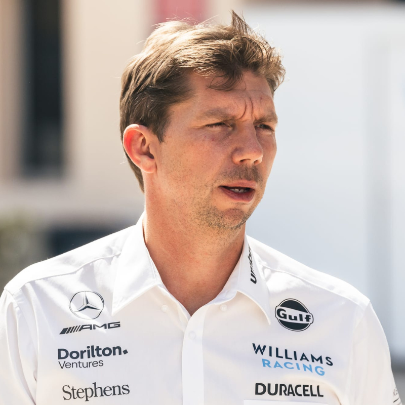

Stefano Domenicali es el actual CEO de la Fórmula 1, habiendo asumido el cargo en 2021. Anteriormente, Domenicali fue jefe del equipo Ferrari, lo que le dio una gran experiencia en el mundo de la F1. Como CEO, se ha centrado en aumentar la visibilidad global del deporte, expandir su alcance a nuevos mercados y mejorar la experiencia de los fanáticos, a la vez que mantiene la esencia competitiva de la Fórmula 1. La FIA, que regula el deporte, ha sido objeto de controversia por algunas de sus decisiones. Uno de los ejemplos más recientes es la introducción de una nueva regla que prohíbe las palabrotas en las transmisiones. Esta medida provocó abucheos de los aficionados y pilotos, quienes la consideraron innecesaria. Muchos argumentaron que estas expresiones son naturales en un deporte tan apasionante como la F1 y que esta censura podría restar autenticidad a la emoción de las carreras. A pesar de las críticas, la FIA mantiene su postura sobre la regulación del lenguaje en la F1.
Los CEO de los equipos de Fórmula 1 son responsables de tomar decisiones clave para el éxito del equipo, tanto dentro como fuera de la pista. Dos de los más conocidos son Zak Brown, CEO de McLaren, y Toto Wolff, CEO de Mercedes AMG Petronas. Zak Brown se unió a McLaren en 2016 y se ha centrado en revitalizar la marca, aumentar el rendimiento del equipo y mejorar su situación financiera. Ha sido fundamental en la atracción de nuevos patrocinadores y en la implementación de estrategias de marketing que han elevado el perfil de McLaren. Toto Wolff, por otro lado, ha estado al mando de Mercedes desde 2013. Bajo su liderazgo, Mercedes ha dominado la F1, ganando múltiples campeonatos mundiales con Lewis Hamilton. Wolff es conocido por su habilidad para tomar decisiones estratégicas clave y su enfoque en el trabajo en equipo. Es una figura clave en el éxito continuado de Mercedes en la F1. Ambos son líderes fuertes, pero con estilos diferentes, cada uno manejando su equipo hacia el éxito de manera única.
Un jefe de equipo en la Fórmula 1 es la persona responsable de dirigir todas las operaciones de un equipo, tanto dentro como fuera de la pista. Este rol incluye tomar decisiones estratégicas durante las carreras, gestionar el personal técnico, manejar la relación con los pilotos y los patrocinadores, y asegurar que el equipo funcione de manera eficiente. En resumen, el jefe de equipo es el líder principal que tiene la última palabra sobre las decisiones más importantes del equipo. Un ejemplo claro de la labia y el estilo único de un jefe de equipo es Guenther Steiner, el jefe de Haas F1 Team. Steiner es conocido por su forma directa y a veces ruda de hablar, tanto en entrevistas como con su equipo. Esta actitud le ha ganado mucha popularidad, especialmente entre los fanáticos. A menudo no tiene miedo de decir lo que piensa, y sus comentarios suelen ser muy sinceros, lo que a veces le lleva a situaciones divertidas o incluso controvertidas. Su estilo es un claro ejemplo de cómo un jefe de equipo puede usar su personalidad para motivar a su equipo, crear una atmósfera de franqueza y mantener todo en marcha, incluso en tiempos difíciles. Por otro lado, James Vowles, el jefe de Williams Racing, tiene un enfoque diferente. Antes de asumir el liderazgo de Williams, Vowles trabajó en Mercedes, donde desempeñó un papel clave en el éxito de ese equipo, especialmente en la estrategia de carrera. Su profundo conocimiento de cómo opera un equipo ganador como Mercedes lo ha convertido en un líder valioso para Williams. Sin embargo, la transición no fue sencilla. Vowles rompió su contrato con Mercedes para unirse a Williams, lo que no fue una decisión fácil, ya que estaba dejando un equipo dominante en la F1. Pero su visión para reconstruir Williams y aplicar lo que aprendió en Mercedes es clave para intentar devolver al equipo a la competitividad. Su experiencia en un equipo campeón le da una ventaja, ya que sabe exactamente qué se necesita para ganar y cómo implementar cambios exitosos.